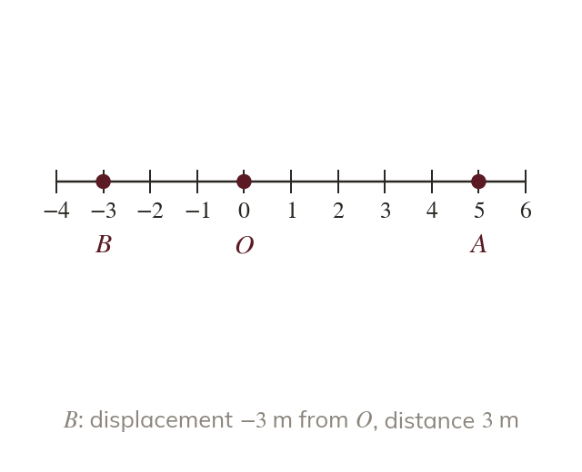
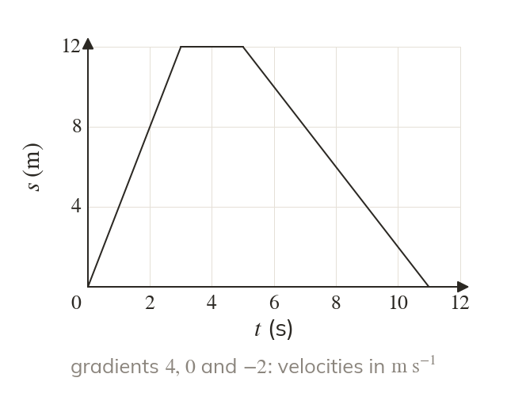
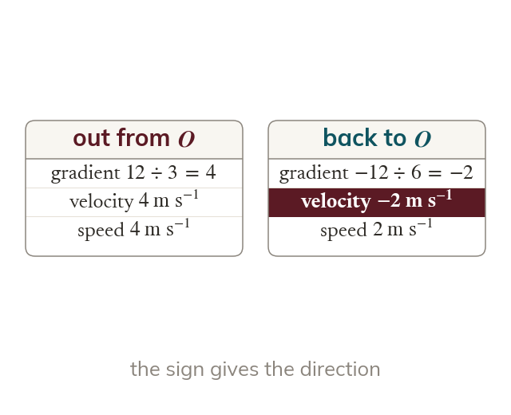
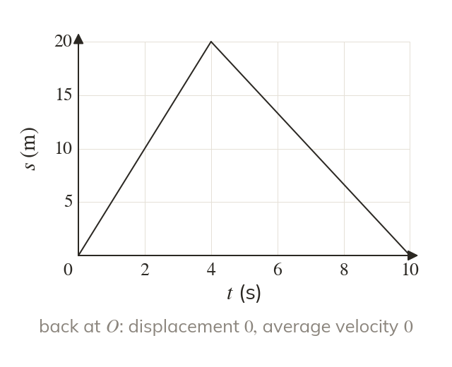
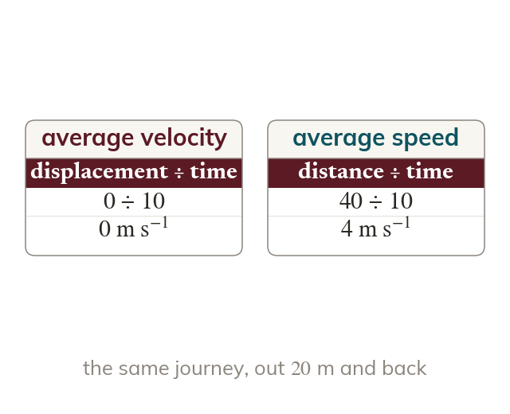

Displacement has a direction
Displacement is measured from a fixed point in a chosen positive direction, so it can be negative. Distance is its size only, and is never negative.
A displacement-time graph shows where a body is at every moment, and its gradient shows how fast it moves and in which direction. The next lesson's velocity-time graphs build on this one, and together they lead to the constant acceleration formulae.
Work down the page at your own pace. Write every answer in your book first, then click to check it.
Read each card, then follow the worked examples one step at a time.

Displacement is measured from a fixed point in a chosen positive direction, so it can be negative. Distance is its size only, and is never negative.

On a displacement-time graph, the gradient of each straight stage is the velocity on that stage. A horizontal stage has gradient zero, so the body is at rest.

A stage sloping down means the displacement is falling, so the body moves back towards . Its velocity is negative, and its speed is the size of the velocity.
Pick an answer. If it's wrong, the feedback tells you which mistake it was.
Read each card, then follow the worked examples one step at a time.

Average velocity is the total displacement divided by the total time. A journey that ends where it began has an average velocity of zero.

Average speed is the total distance divided by the total time. When a body turns back, the distance is more than the displacement, so the two averages differ.
Pick an answer. If it's wrong, the feedback tells you which mistake it was.
Finished? Next lesson: M9.2 Velocity-Time Graphs.
For each skill, tap the one that is true for you today. Your Revise pages start with anything you mark Not yet.
Your ratings are saved on this device only.
Log in, then search for a code to practise that skill.